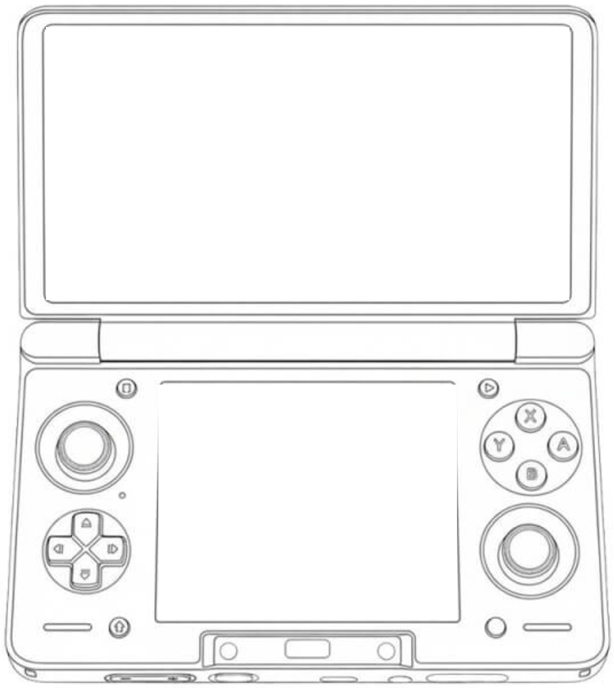

Back button, three ways
tap a gesture below

App A
BACK BUTTON HERO
A
E
Screenshot
Close all
L2
L1
R2
R1
App B
BACK BUTTON HERO
App
D
App
E
App
F
App
G
App
H
App
I
App
C
App
J
App
K
App
L
App
M
App
N
App
O
App
P
App
Q
App
R
App
S
App
T
App
U
App
V
B
App B
D
App D
Both screens
Close all
Single tap
Double tap
Tap, hold
Hold
Hold + L1/R1
Hold + L2/R2